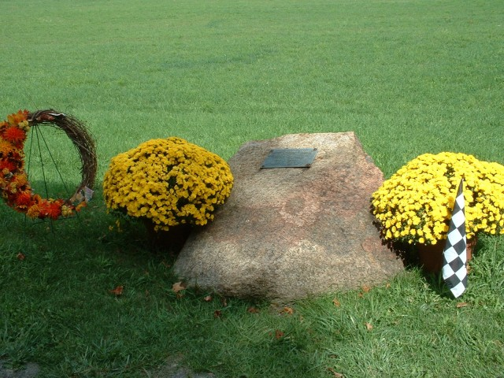
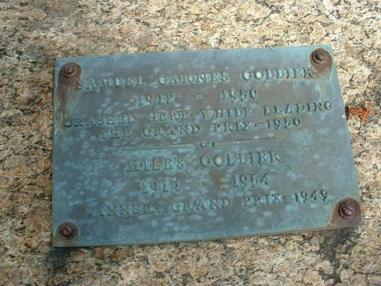

The Motorsport Memorial website
Motor Sport Monuments and Memorials - Watkins Glen, NY, United States
Colllier Memorial Photo ©2005 Cullen Noonen  |
Photo ©2005 Cullen Noonen |
| Samuel Collier was killed in the 1950 race when he crashed whilst leading in the right hand sweeper at the end of the underpass straight. The inscription reads: |
SAMUEL GARNES COLLIER MILES COLLIER |
The Motorsport Memorial website